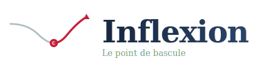
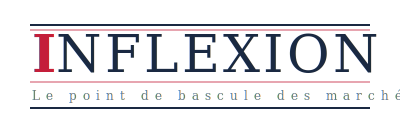
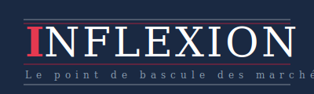
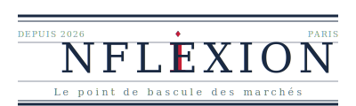
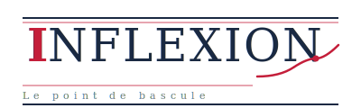

1 — Original
Courbe S rouge avec point d'inflexion + serif. Le moment où les marchés basculent.
1A — Dark
Version fond sombre. Idéal pour header dark, réseaux sociaux, mode nuit.
1B — Gold Premium
Courbe or/dorée. Connote le luxe, la finance haut de gamme, l'or physique.
1C — Double courbe
Avant (gris) / après (rouge) le point d'inflexion. Flèche ascendante. Narration de retournement.
1D — Courbe intégrée dans le I
La courbe remplace le « I ». Compact, icônique, reconnaissable en petit format.
1E — Empilé vertical
Grande courbe au-dessus du texte centré. Zone ombrée subtile. Style tableau de bord.
4 — Original
Style Financial Times / The Economist. I rouge italique, filets, tagline.
4A — Dark
Version fond bleu marine. Élégant pour headers et social media.
4B — Compact
Sans tagline, centré, encadré de filets rouges. Pur et minimal.
4C — Red Block
Le I dans un bloc rouge plein (style The Economist). Fort impact visuel.
4D — Double Rule Journal
Style journal de référence avec double filet, mention « Paris » et « Depuis 2026 ».
4E — Mixed (Editorial + Courbe)
Fusion des concepts 1 et 4 : style éditorial avec la courbe d'inflexion intégrée.